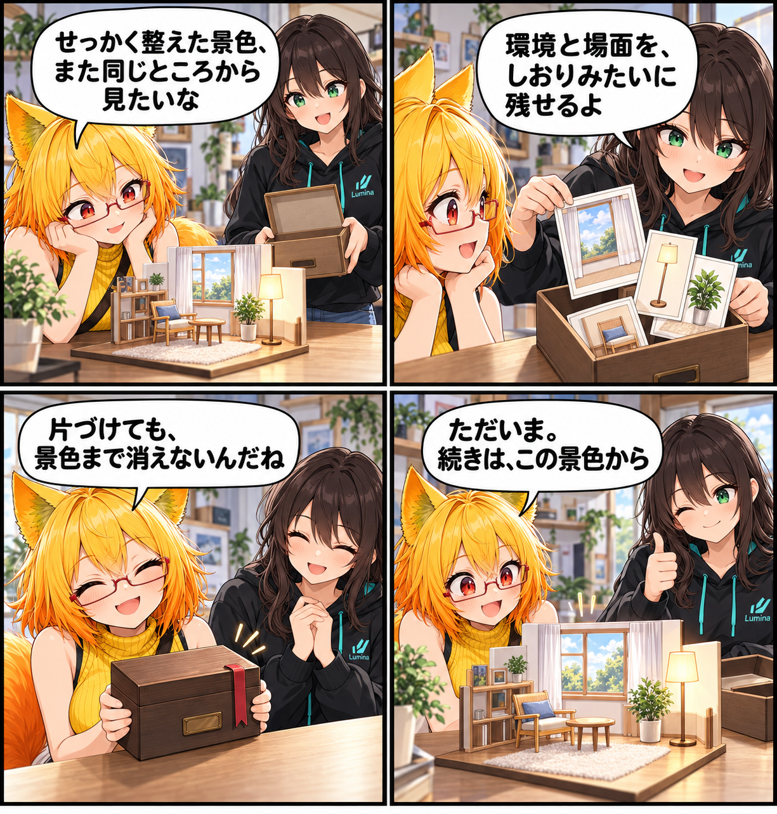

2026.10.16 / Development Log
景色ごと、またここから
VRASで扱えるVBGの環境保存とStudio Stateを、整えた場面からまた始められる既存機能として紹介します。
今回は feature-spotlight（閑話休題） です。集計期間は2026-10-15 03:00:00 JSTから2026-10-16 02:59:59 JST、参照ブランチはViewerの
main です。集計終了時点のHEADは e489bb2e2ced26e7c42dc7bc34e7664684774baf、期間内コミットは0件でした。未コミット差分は実装日時を確認できないため当日の実績には含めず、集計終了時点で確認できる既存機能を紹介します。
景色も、場面も、次につなぐ
VRASではアバターだけでなく、VBGの環境とStudio Stateを扱えます。背景を整え、撮影や鑑賞の途中で作った場面を残しておけば、次に開いたときに同じ景色から続けられます。
一度きりにしないための保存
場所を作り込む時間には、アバターを調整する時間とは別の楽しさがあります。背景や場面の状態を保存できれば、片付ける前の構図を覚えておく必要はありません。次のセッションで、あのときの空気感へ自然に戻れます。
4コマの裏話
今回は、場面を物理的な「しおり箱」に見立てました。箱を閉じるのは終わりではなく、また同じ景色へ戻るための目印です。これは当日の新規実装ではなく、現行のVRASで確認できるVBG環境・Studio Stateの紹介です。
まとめ
VBGとStudio Stateは、環境や場面を一度きりにせず、次の鑑賞や撮影へつなげるための仕組みです。
本日のひとこと
「ただいま」と言える景色を、そっと残しておきます。